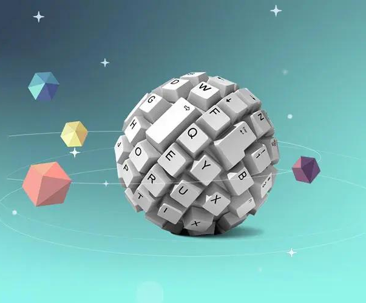
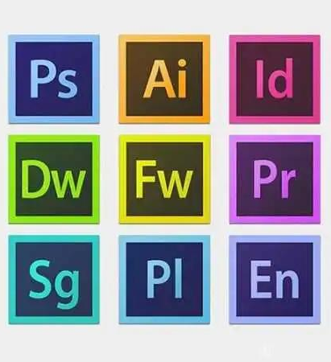

名人轶事 第一站 众所周知，计算机的出现为我们人类提供了巨大的便利，人们可以利用计算机进行学习，聊天，听音乐，看视频，玩游戏等等，现在让我们走进计算机的世界，对它进行深一步的了解。首先，在计算机的诞生过程中，图灵、冯诺依曼等人提供了巨大的贡献，他们也同样发生过一些有趣的故事，让我们一起了解一下。 阅读更多
 前端之美 第二站 接下来，让我们走进计算机的前端部分。前端技术一般分为前端设计和前端开发，HTML、CSS、JavaScript这三个是前端开发中最基本也是最必须的三个技能。前端的开发中，在页面的布局时，HTML将元素进行定义，CSS对展示的元素进行定位，再通过JavaScript实现相应的效果和交互。 阅读更多
 软件介绍 第三站 这一站我们将介绍一些软件的功能。软件是用户与硬件之间的接口界面，用户主要是通过软件与计算机进行交流，软件是计算机系统设计的重要依据。为了方便用户，为了使计算机系统具有较高的总体效用，在设计计算机系统时，必须通盘考虑软件与硬件的结合，以及用户的要求和软件的要求。计算机为我们提供了很多实用方便的软件，微信，qq，ps，pr，浏览器等等，利用它们不仅可以与别人进行更好的交流沟通，更能制造出美丽的照片，好看的视频，但是你真的了解它们吗？ 阅读更多
人工智能 第四站 人工智能已经逐渐走进我们的生活，并应用于各个领域，它不仅给许多行业带来了巨大的经济效益，也为我们的生活带来了许多改变和便利。它包括无人驾驶汽车、人脸识别、机器翻译、声纹识别、智能客服机器人、智能音箱和图像搜索等等，是研究、开发用于模拟、延伸和扩展人的智能的理论、方法、技术及应用系统的一门新技术科学。接下来让我们具体了解一下。 阅读更多
云计算 第五站 较为简单的云计算技术已经普遍服务于现如今的互联网服务中，最为常见的就是网络搜索引擎和网络邮箱。搜索引擎大家最为熟悉的莫过于谷歌和百度了，在任何时刻，只要用过移动终端就可以在搜索引擎上搜索任何自己想要的资源，通过云端共享了数据资源。而网络邮箱也是如此，在过去，寄写一封邮件是一件比较麻烦的事情，同时也是很慢的过程，而在云计算技术和网络技术的推动下，电子邮箱成为了社会生活中的一部分，只要在网络环境下，就可以实现实时的邮件的寄发。其实，云计算技术已经融入现今的社会生活。 阅读更多
网络安全 第六站 最后一站我们将介绍一下网络安全这一内容。它是国家安全包括的一项基本内容，指计算机网络的安全，也指计算机通信网络的安全。可以把网络安全定义为：一个网络系统不受任何威胁与侵害，能正常地实现资源共享功能。要使网络能正常地实现资源共享功能，首先要保证网络的硬件、软件能正常运行，然后要保证数据信息交换的安全。让我们具体了解一下吧！ 阅读更多